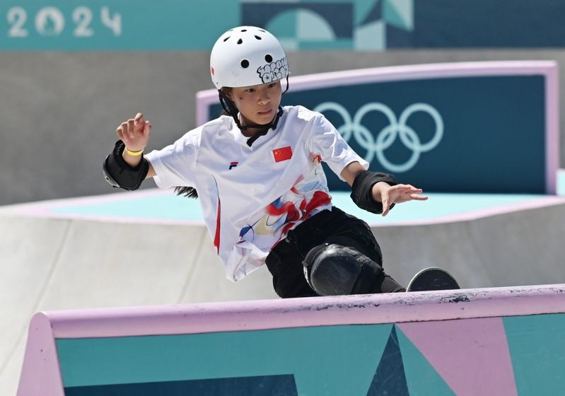
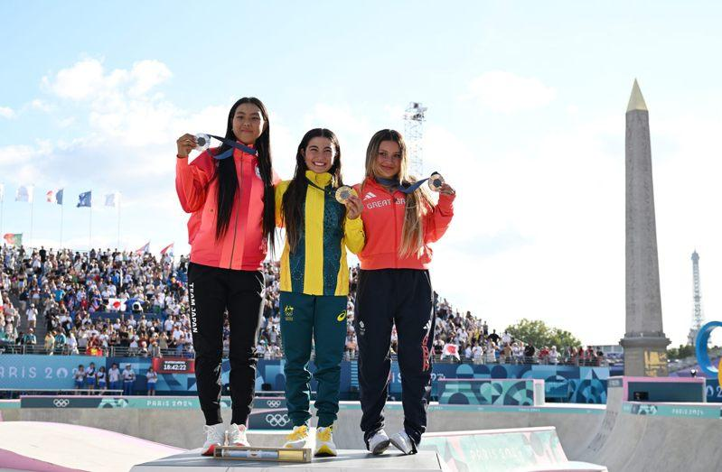

巴黎奥运滑板女子碗池比赛6日在协和广场收官，澳洲队的特鲁夺得金牌，中国队年仅11岁的郑好好迎来奥运首秀，以预赛第18名的成绩完赛。
作为中国体育代表团参加巴黎奥运年龄最小的运动员，滑手郑好好完成了奥运首秀。还有5天才过12岁生日的她也是本届奥运所有代表团中年龄最小的运动员。
郑好好在预赛第二组第三个下池，首滑发挥稳定，取得63.19分。得到保底成绩的郑好好在第二轮和第三轮中增加了动作难度，但可惜均出现失误，最终位列预赛第18名，无缘决赛。
虽然奥运之旅提早结束，但刚刚小学毕业的郑好好仍表示在赛场「玩得非常开心」。

「很开心，也很自豪可以代表国家参赛。」郑好好赛后说。她于6月底布达佩斯举行的奥运资格系列赛中滑出72.6分的成绩，「压哨」取得奥运资格。
谈及奥运首秀，郑好好表示「没有压力」。「奥运与我平时的练习和比赛区别不大，就是这里人（观众）多一点。」郑好好说。
经过预赛22位滑手一个上午的角逐，前8名进入下午的决赛。决赛中，东京奥运亚军、日本选手开心那在第一轮就得到91.98的高分领先全场，英国滑手布朗和澳洲选手特鲁虽然在第二轮中也上演精彩表现，但仍未能超过开心那。
至关重要的第三局中，头戴标志性粉色头盔、年仅14岁的特鲁以完美表现征服了评委，得到93.18分，惊险获胜。开心那凭借第三轮的92.63分摘得银牌，布朗以第三轮的92.31分位列第三。
巴黎奥运热话题
- 乒乓／台湾男团不敌日本止步8强 庄智渊奥运之旅结束
- 法撑竿跳选手下体打落横杆出局 引来色情网站开价
- 全红婵丑拖鞋、黄雨婷发夹卖翻 有商家2天接60万个订单
- 日本羽球女神红了 志田千阳被挖角进演艺圈
- 「美到像AI」匈牙利21岁女剑客脱下面罩惊艳全场